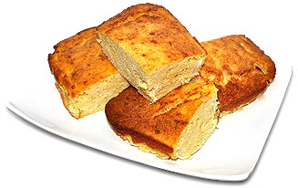

INGREDIENTES
- 800 a 900 gramos de Harina de Maiz
- 6 Huevos
- 1 Litro de Leche
- 6 Cebollas medianas
- 600 gramos de Queso Paraguay o Cremoso
- 1 Cucharada de Sal
- 150ml de Aceite Vegetal
En el siguiente video vas a poder ver toda la preparacion de la Sopa paraguaya
-->